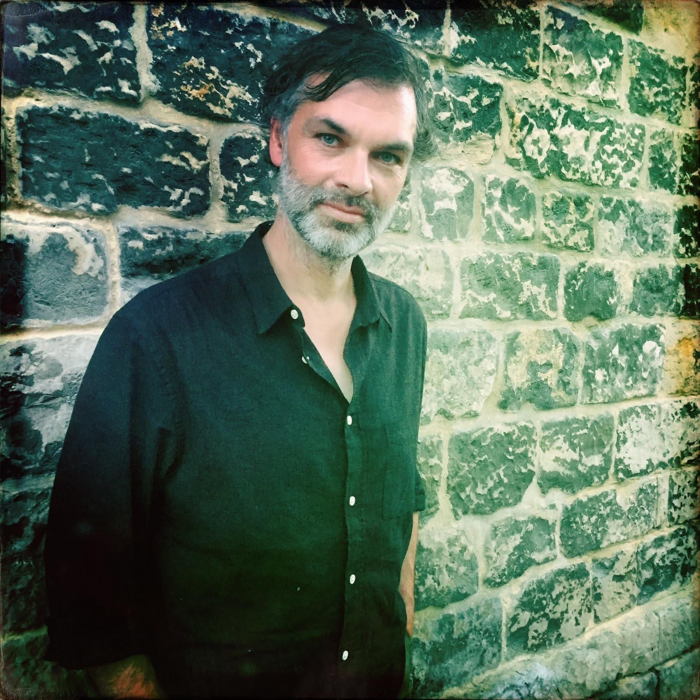

Hallo, ik ben Dennis
Als .NET ontwikkelaar en fotograaf combineer ik mijn technische expertise met creatieve passie. Met meer dan 20 jaar ervaring in softwareontwikkeling en 15 jaar voor fotografie, probeer ik in beide werelden de perfecte balans te vinden tussen functionaliteit en esthethiek.
Overdag werk ik aan complexe softwareoplossingen, 's avonds en in weekenden trek ik erop uit met mijn camera om de wereld om me heen vast te leggen. Beide disciplines leren me elke dag iets nieuws over precisie, creativiteit en het belang van de juiste tools.
Op deze website deel ik mijn ervaringen, geleerde lessen en passie voor zowel code als fotografie. Van technische tutorials tot fotografie tips - ik hoop dat je hier inspiratie vindt voor je eigen journey.

Wat Mij Drijft
Perfectie Nastreven
Zowel in code als in fotografie streef ik naar kwaliteit en aandacht voor detail.
Continue Ontwikkeling
De tech-wereld en fotografie evolueren snel. Ik leer graag nieuwe technieken en trends.
Kennis Delen
Door te onderwijzen en te delen, leer ik zelf ook weer nieuwe perspectieven kennen.
Architectuur
Werk met .NET en C# om robuuste, schaalbare softwareoplossingen te bouwen. Ik hou van het ontwerpen van systemen die zowel functioneel als onderhoudbaar zijn.
AI
Hoe AI toepassen in softwareontwikkeling en fotografie? Ik experimenteer graag met nieuwe technologieën en tools.
Innovatie
Altijd op zoek naar creatieve oplossingen en nieuwe manieren om problemen te benaderen.
Laten We Connecten
Vragen over .NET development? Fotografietips nodig? Of gewoon een gezellig gesprek? Ik hoor graag van je!
Stuur Een Bericht